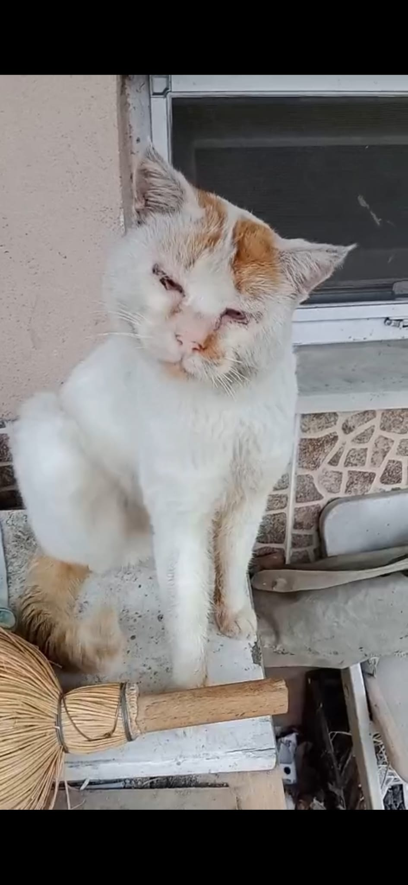
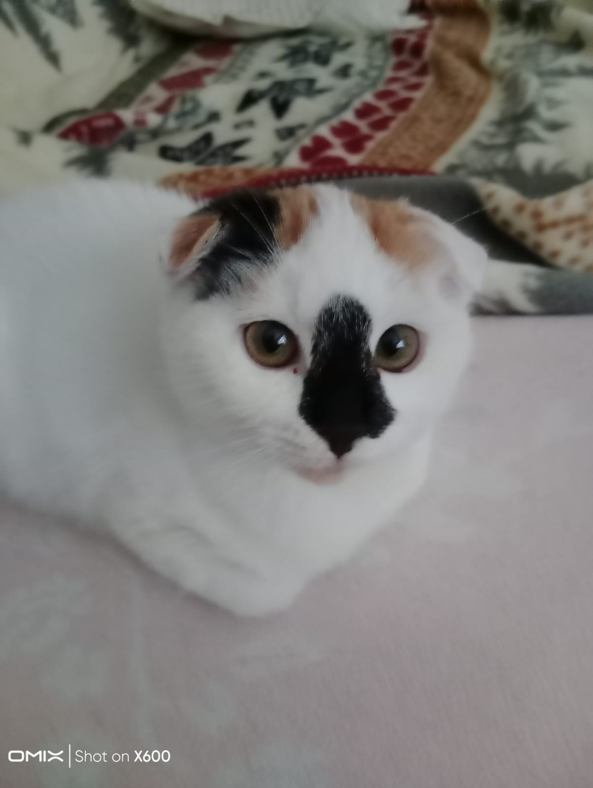
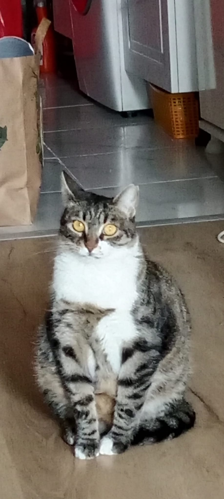

Pofuduklar
Mıncırmalıklar
Güzeller

Adam sevdiğim ilk kedilerden. Asi, yaramaz ve pasaklı özellikleri ile öne çıkıyor. Kendisi bizi satıp zengin kedili kadının mahallesinde takılmaya başladı ama beni görünce hem yanıma koşardı. Kendisini taşınmadan önce ziyaret edip gördüm daha sonra birkaç arkadalımda baktı ama muhtemelen öldü ki zaten çok yaşlıydı. Allah rahmet eylesin ismi çirkin kedim.
Bu güzel kedi Mirket. Annem kulakları ve gözleri uzaylıya benziyor diyerek eve aldı. Ama biz daha çok Mirkete'e benzettik. Tabii ki sıkıldıkları için sokağa salıp duruyorlardı camdan. Ve bir gün camdan kaçtı ve bir daha dönmedi :(
Bu güzellik de neredeyse 2 yıldır bizimle. Obez, huzursuz ve biraz asosyel olması dışında sağlıklı. Umarım o da evden kaçmayı başarır derdim ama 1 2 dk zor yaşar sokakta. Aynı ben bu kedi.Evet daha bir sürü kedim var ama hepsine uğraşamam ama yine de internetten aldığım bir kaç kedi fotosu:


Pofuduklar
Mıncırmalıklar
Güzeller